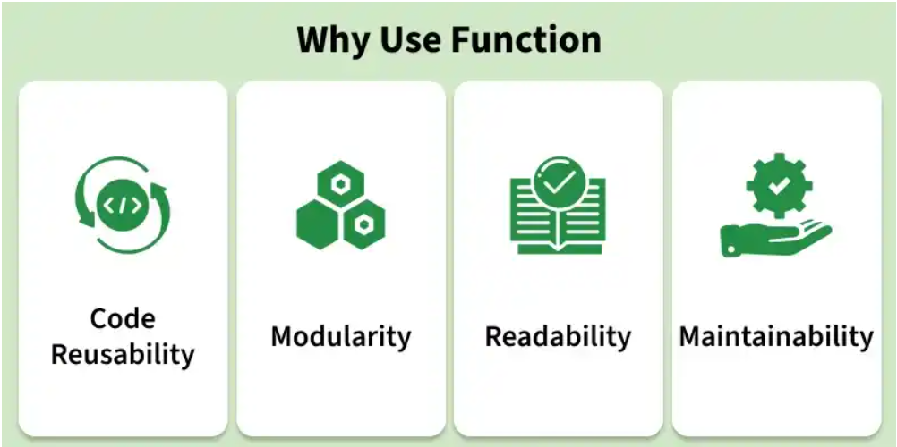
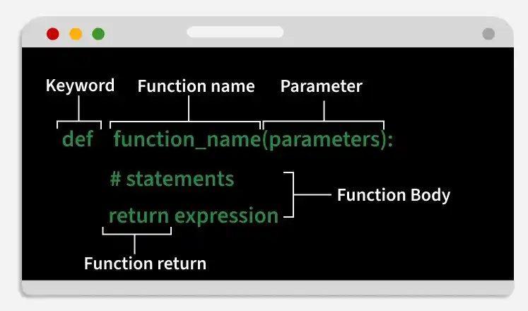
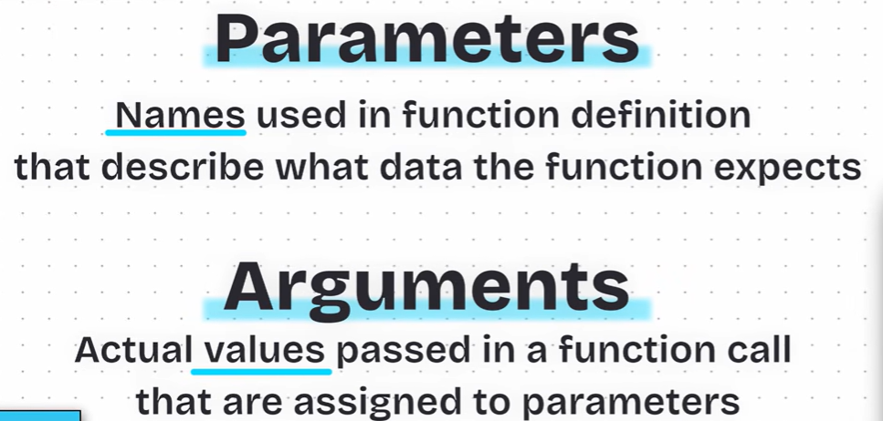
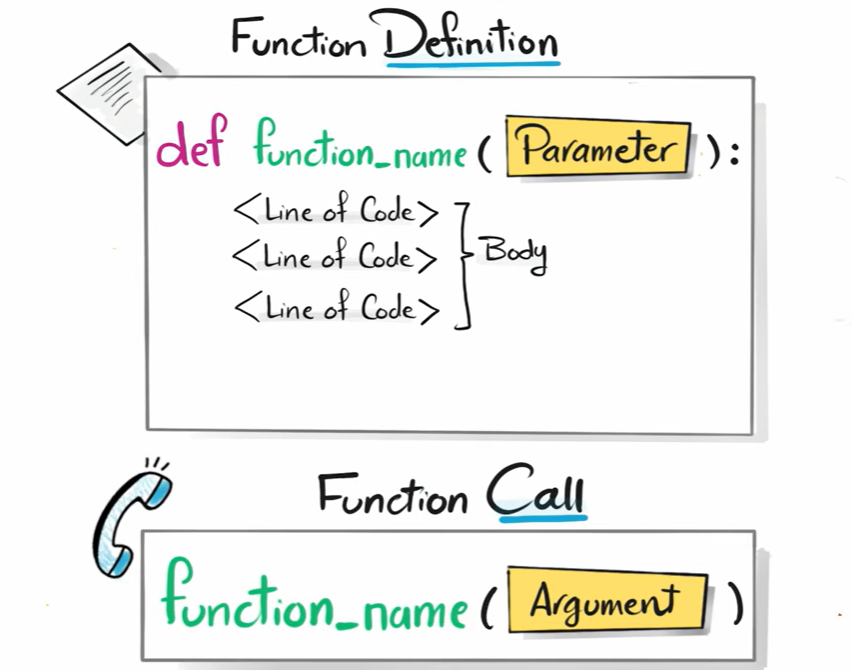
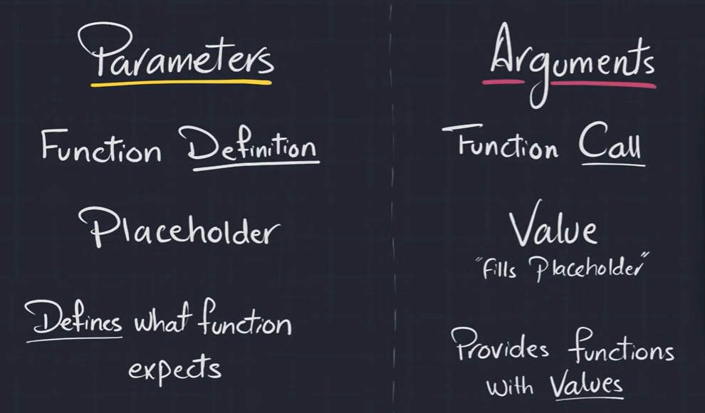
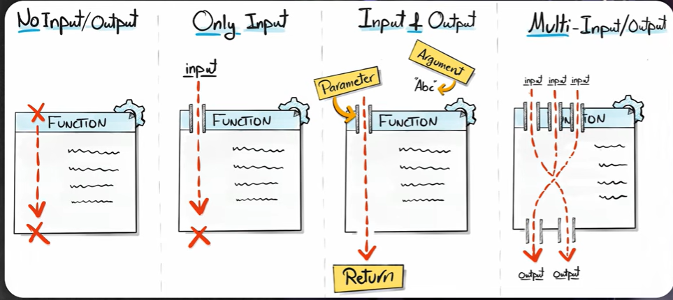

An exhaustive academic and industrial guide covering procedural abstraction, function definitions with def, call stack lifecycle, parameter vs. argument semantics, positional & keyword arguments, default parameters, variable-length *args and **kwargs, return value mechanics, pure vs. impure functions, and scope resolution (LEGB rule).
Prepared by Umer Farooq
Department of Computer Science & Engineering | SSM College of Engineering
Foundational rationale for modular programming: DRY principle, information hiding, modularity, testability, the 4-tier function hierarchy (Built-in, Standard, External, UDF), and the Golden Rule of software engineering.
01.1 Theoretical Foundation & Architectural Diagrams
Python functions are reusable, named blocks of code engineered to perform a specific, well-isolated task. When you build a real-world software system, it easily grows to hundreds or thousands of lines of code. Writing all that logic in a single monolithic script leads to unmaintainable, error-prone software. Instead, professional developers decompose large problems into smaller, more manageable, and reusable chunks called functions.
A function allows a programmer to group a set of instructions together under a descriptive name, so that the logic can be authored once, verified, and executed repeatedly across the program.
Core Software Architecture Standards
Code Reusability (DRY)
Write once, use many times. Eliminates redundant code duplication by consolidating algorithms into callable routines.
Modularity & Single Responsibility (SRP)
Break complex monolithic problems into smaller, isolated, single-purpose components where each function performs exactly one task.
Abstraction & Information Hiding
Callers interact strictly with a function's clean public interface without needing knowledge of internal implementation details.
Readability & Self-Documentation
Well-named functions (e.g. calculate_tax(), is_even()) make code read naturally like plain English.
Maintainability & Testability
Isolated units of logic can be independently unit-tested, profiled, debugged, and refactored without breaking external code.

🔍 Click to Enlarge
Figure: Why Use Functions: The 4 Core Pillars
Code Reusability, Modularity, Readability, and Maintainability in modern software design.
Key Execution Takeaway: Encapsulating the tax formula in calculate_invoice() eliminates copy-paste bugs and enables single-point maintenance.
P1 2 HIERARCHY DEMONSTRATIONPython 3 Executable
Example 1.2: Exploring Python's 4-Tier Function Hierarchy
Demonstrates the interplay between Built-in functions, Standard Library modules, and Custom User-Defined Functions.
p1_2_hierarchy_demonstration.py
importmath# 2. Standard Libraryimportrandom# 2. Standard Library# 4. User-Defined Function (UDF)def compute_circle_metrics(radius):
"""Computes area and circumference using Standard Library math.pi."""
area = math.pi * math.pow(radius, 2)
circumference = 2 * math.pi * radius
return area, circumference
# 1. Built-in Function usage (len, range, print)
test_radii = [random.randint(5, 15) for _ inrange(3)]
print(f"Sample Radii Count: {len(test_radii)}")
for r in test_radii:
a, c = compute_circle_metrics(r)
print(f" Radius: {r:2d} units | Area: {a:7.2f} sq.u | Circumference: {c:6.2f} u")
⚡ Terminal OutputExit Code: 0
Sample Radii Count: 3
Radius: 12 units | Area: 452.39 sq.u | Circumference: 75.40 u
Radius: 7 units | Area: 153.94 sq.u | Circumference: 43.98 u
Radius: 15 units | Area: 706.86 sq.u | Circumference: 94.25 u
Key Execution Takeaway: Standard math and random modules combine seamlessly with custom user-defined mathematical routines.
Part 02 • Syntax & Structure
2. Defining a Function (Syntax, Anatomy & Conventions)
Exhaustive guide to Python function declaration: the def keyword, parameter signatures, indentation blocks, docstrings, naming conventions (snake_case), and PEP 8 structural rules.
02.1 Theoretical Foundation & Architectural Diagrams
To create a custom function in Python, we use the def keyword (short for 'define'). This is followed by the function identifier, parentheses enclosing optional parameters, and a terminating colon (:). The body of the function must be indented consistently (typically 4 spaces).
PEP 8 Naming Conventions:
Use meaningful and descriptive names (e.g., calculate_area, not ca).
Use lowercase letters only.
Use underscores to separate multiple words (snake_case).
PEP 8 recommends placing two blank lines after top-level function definitions to keep code clean and readable.

🔍 Click to Enlarge
Figure: Anatomy of a Function Definition
Key structural components: def keyword, function name identifier, formal parameter list, indented body statements, and return expression.
02.2 One-Line Academic Definitions & Mechanisms
The following table provides executive academic definitions, syntax archetypes, and internal runtime mechanisms for this section:
Core Concept
Syntax / Archetype
Academic Definition & Mechanism
The def Keyword
def function_name():
Python statement keyword that initiates the creation and binding of a new function object.
Function Signature / Header
def name(param1, param2):
The declaration line specifying the function's identifier, parameters, and colon.
Function Body
Indented block (4 spaces)
The sequence of statements executed whenever the function is called.
Docstrings (Documentation Strings)
"""Description"""
A string literal placed as the first statement in a function body to describe its interface and behavior.
snake_case Naming
calculate_total_bill()
PEP 8 naming convention requiring lowercase letters separated by underscores for function identifiers.
Two-Blank-Line Rule
PEP 8 formatting
Standard style guide requirement placing two blank lines around top-level function definitions.
Empty Parameter List
def action():
A parameterless function signature designed to execute fixed logic without external inputs.
Single Parameter Function
def square(x):
A function accepting exactly one input argument for unary mathematical or formatting operations.
Multi-Parameter Function
def add(a, b, c):
A function accepting two or more comma-separated arguments.
Pass Placeholder
def todo(): pass
The pass keyword used as a syntactical placeholder for empty stub functions during development.
Review the fully verified Python 3 implementations below, complete with syntax highlighting, live terminal output traces, and key execution takeaways:
P2 1 SIMPLE GREETPython 3 Executable
Example 2.1: Simple Greet Function (From Lecture)
The standard baseline greeting function defining two print statements inside its body.
p2_1_simple_greet.py
# Defining a simple greeting functiondef greet():
print("Hi there")
print("Welcome aboard")
# Invoking the function
greet()
⚡ Terminal OutputExit Code: 0
Hi there
Welcome aboard
Key Execution Takeaway: Defining greet() stores the instructions; executing greet() runs the two print statements in order.
P2 2 SEPARATOR LINE GENERATORPython 3 Executable
Example 2.2: A Function to Display a Separator Line
Demonstrates reusable UI visual formatting by encapsulating divider line logic into a callable function.
p2_2_separator_line_generator.py
# Reusable separator line functiondef print_separator():
print("=" * 40)
# Calling separator across program output
print_separator()
print("Welcome to Python Programming")
print_separator()
⚡ Terminal OutputExit Code: 0
========================================
Welcome to Python Programming
========================================
Key Execution Takeaway: The print_separator() function can be called before and after any block to create neat terminal banners.
P2 3 STUDENT INFO DISPLAYPython 3 Executable
Example 2.3: A Function to Display Student Info
Encapsulates multi-line student profile reporting into a clean, reusable subroutine.
p2_3_student_info_display.py
# Function displaying static student informationdef show_student_info():
print("Name : Rahul Sharma")
print("Roll No: 101")
print("Branch : Computer Science")
# Invoking the function
show_student_info()
⚡ Terminal OutputExit Code: 0
Name : Rahul Sharma
Roll No: 101
Branch : Computer Science
Key Execution Takeaway: Organizing student info output into a function allows it to be invoked from multiple menus.
P2 4 STUDENT PROFILE CARDPython 3 Executable
Example 2.4: Formatted Student Profile Badge Card
Defines a structured function accepting student attributes and rendering an aligned ASCII identification card.
p2_4_student_profile_card.py
# Function with multiple descriptive parametersdef display_student_info(roll_no, name, semester, branch="CSE"):
"""Renders a formatted student academic identification card."""print("+" + "-" * 38 + "+")
print(f"| ROLL NO : {roll_no:<26s} |")
print(f"| NAME : {name:<26s} |")
print(f"| SEMESTER : {semester:<26s} |")
print(f"| BRANCH : {branch:<26s} |")
print("+" + "-" * 38 + "+")
# Invoking with student records
display_student_info("CSE-2026-042", "Umer Farooq", "5th Semester")
display_student_info("CSE-2026-088", "Zehra Khan", "5th Semester")
⚡ Terminal OutputExit Code: 0
+--------------------------------------+
| ROLL NO : CSE-2026-042 |
| NAME : Umer Farooq |
| SEMESTER : 5th Semester |
| BRANCH : CSE |
+--------------------------------------+
+--------------------------------------+
| ROLL NO : CSE-2026-088 |
| NAME : Zehra Khan |
| SEMESTER : 5th Semester |
| BRANCH : CSE |
+--------------------------------------+
Key Execution Takeaway: Formatting string width specifiers like :<26s ensure uniform card borders regardless of name length.
P2 5 MULTI PARAMETER ADDITIONPython 3 Executable
Example 2.5: Function with Multiple Parameters (Arithmetic Addition)
Accepts two numeric parameters, computes their sum, and outputs the result.
p2_5_multi_parameter_addition.py
# Multi-parameter addition functiondef add_numbers(a, b):
"""Adds two numbers and prints the sum."""
total = a + b
print(f"Calculating {a} + {b} => The sum is: {total}")
add_numbers(15, 25)
add_numbers(100, -35)
add_numbers(3.1415, 2.7182)
⚡ Terminal OutputExit Code: 0
Calculating 15 + 25 => The sum is: 40
Calculating 100 + -35 => The sum is: 65
Calculating 3.1415 + 2.7182 => The sum is: 5.8597
Key Execution Takeaway: Multiple parameters are separated by commas in both the function definition and function call.
Part 03 • Interface Mechanics
3. Parameters vs. Arguments Deep Dive
Strict formal distinction between parameters (placeholders in def) and arguments (values in call), positional binding, required argument enforcement, and string normalizers.
03.1 Theoretical Foundation & Architectural Diagrams
Functions can accept inputs. When defining a function, the variables listed inside parentheses are called parameters. When calling the function, the actual concrete values you pass are called arguments.
Term
Where it Appears
Formal Academic Definition
Parameter
Inside Function Definition Signature (def)
The variable listed in the function definition (an empty placeholder describing expected data).
Argument
Inside Function Call Expression (())
The actual concrete value passed to the function when calling it; it fills the parameter placeholder.
Required Parameters Warning: By default, all parameters defined in a function signature are strictly required. If the caller omits a required argument, Python raises a TypeError: missing required positional argument.

🔍 Click to Enlarge
Figure: Parameters vs. Arguments Core Definitions
Parameters are names in definition describing expected data; Arguments are actual values supplied during call.

🔍 Click to Enlarge
Figure: Function Definition vs. Function Call Architecture
Defining prepares the blueprint with Parameters; Calling executes the instructions by passing concrete Arguments.

🔍 Click to Enlarge
Figure: Parameters vs. Arguments Comparison Blackboard
Side-by-side contrast: Placeholder vs. Value, Function Definition vs. Function Call.
03.2 One-Line Academic Definitions & Mechanisms
The following table provides executive academic definitions, syntax archetypes, and internal runtime mechanisms for this section:
Core Concept
Syntax / Archetype
Academic Definition & Mechanism
Formal Parameter
def func(param):
A variable identifier declared in the function definition header that receives an incoming value.
Actual Argument
func(arg_value)
The concrete literal, variable, or evaluated expression passed into a function call.
Positional Mapping
func(arg1, arg2)
Mapping arguments to parameters strictly based on their physical left-to-right ordering.
TypeError Missing Argument
TypeError: missing req arg
Runtime exception raised when calling a function with fewer arguments than required parameters.
TypeError Extra Argument
TypeError: takes N but M given
Runtime exception raised when passing more positional arguments than the function defines.
Times-Two Baseline
def times_two(x): ...
Canonical example demonstrating parameter x receiving argument value 3.
String Normalizer Parameter
def clean_name(name):
Accepting varying text arguments and applying uniform strip() and lower() cleaning.
Formal Salutation Parameter
def formal_greet(title, name):
Multi-parameter text assembly combining honorifics and personal names.
Rectangle Area Model
def calculate_area(l, w):
Geometric algebraic computation receiving length and width inputs.
Parameter Mutability Scope
Local argument binding
Modifying an immutable parameter inside a function does not mutate the caller's original variable.
Review the fully verified Python 3 implementations below, complete with syntax highlighting, live terminal output traces, and key execution takeaways:
P3 1 TIMES TWO DEMOPython 3 Executable
Example 3.1: times_two — Parameter vs. Argument Baseline
Demonstrates parameter x in definition and concrete argument 3 in function call.
p3_1_times_two_demo.py
# parameters_vs_arguments.pydef times_two(x): # 'x' is the PARAMETER (placeholder)print(x * 2)
times_two(3) # '3' is the ARGUMENT (actual value)
times_two(7) # '7' is the ARGUMENT
times_two(12) # '12' is the ARGUMENT
⚡ Terminal OutputExit Code: 0
6
14
24
Key Execution Takeaway: The parameter 'x' acts as a local variable receiving the argument value passed on each call.
P3 2 GREET FULL NAMEPython 3 Executable
Example 3.2: Greet with Full Name (From Lecture)
Defines greet(first_name, last_name) and calls it with multiple distinct name arguments.
p3_2_greet_full_name.py
# Function with two required parametersdef greet(first_name, last_name):
print(f"Hi {first_name} {last_name}")
print("Welcome aboard")
greet("Mosh", "Hamedani")
greet("John", "Smith")
greet("Umer", "Farooq")
⚡ Terminal OutputExit Code: 0
Hi Mosh Hamedani
Welcome aboard
Hi John Smith
Welcome aboard
Hi Umer Farooq
Welcome aboard
Key Execution Takeaway: Both first_name and last_name are required; omitting either raises a TypeError.
P3 3 CALCULATE RECTANGLE AREAPython 3 Executable
Example 3.3: Calculate Area of a Rectangle
Accepts length and width parameters to compute and print the geometric surface area.
p3_3_calculate_rectangle_area.py
# Rectangle area calculation functiondef calculate_area(length, width):
area = length * width
print(f"Area of rectangle ({length} x {width}) = {area}")
calculate_area(10, 5)
calculate_area(7, 3)
calculate_area(12.5, 4.0)
⚡ Terminal OutputExit Code: 0
Area of rectangle (10 x 5) = 50
Area of rectangle (7 x 3) = 21
Area of rectangle (12.5 x 4.0) = 50.0
Key Execution Takeaway: Positional argument 10 maps to length, and 5 maps to width in the first invocation.
P3 4 FORMAL GREET TITLEPython 3 Executable
Example 3.4: Custom Formal Greeting with Title
Combines title and name parameters to produce polite academic greetings.
Good morning, Mr. Umer!
Good morning, Dr. Ayesha Khan!
Good morning, Prof. Siddiqui!
Key Execution Takeaway: The function receives two string arguments and formats them into an honorific salutation.
P3 5 CLEAN NAME NORMALIZERPython 3 Executable
Example 5.5: String Cleaning and Normalization with Parameter
Accepts raw user input strings and uses string methods to strip whitespace and lowercase text.
p3_5_clean_name_normalizer.py
# Cleaning names with a parameterdef clean_name(name):
"""Strips leading/trailing whitespace and converts to lowercase."""return name.strip().lower()
print(clean_name(" Maria "))
print(clean_name(" KUMAR "))
print(clean_name(" umEr"))
⚡ Terminal OutputExit Code: 0
maria
kumar
umer
Key Execution Takeaway: The parameter 'name' safely normalizes varying amounts of padding whitespace across separate invocations.
Part 04 • Return Semantics & IO
4. Two Types of Functions & The return Statement
Task-performing functions (Type 1) vs. Value-returning functions (Type 2), why return is superior to print, Python's implicit None return default, and the 4 visual input/output archetypes.
04.1 Theoretical Foundation & Architectural Diagrams
In computer programming, functions are categorized into two broad functional paradigms:
Category
Operational Behavior
Standard Examples
Type 1: Perform a Task (Void)
Carries out an action or side-effect (e.g. printing to terminal, writing to disk). Does not compute a reusable return value.
print(), greet(), display_separator()
Type 2: Calculate & Return a Value
Computes an algorithm and explicitly sends a result back to the caller via the return statement.
round(), len(), get_greeting(), square()
Why return is Superior to print: A function using print() is permanently locked to terminal output. A function using return produces a value you can store in a variable, write to a database, send across a network, or pass into other functions.
The None Default: All Python functions return None by default unless an explicit return statement is encountered. None is Python's singleton object representing the absence of a value.

🔍 Click to Enlarge
Figure: The 4 Universal Function Input/Output Archetypes
Comprehensive taxonomy: 1. No Input/Output, 2. Only Input, 3. Input & Output, 4. Multi-Input/Multi-Output.
04.2 One-Line Academic Definitions & Mechanisms
The following table provides executive academic definitions, syntax archetypes, and internal runtime mechanisms for this section:
Core Concept
Syntax / Archetype
Academic Definition & Mechanism
The return Statement
return value
Terminates function execution and passes the result back to the caller.
Implicit None Return
return / end of block
Default return value produced by all Python functions without an explicit return statement.
Task-Performing Function
Type 1 / Impure
A subroutine focused on carrying out actions (I/O) rather than calculating return values.
Value-Returning Function
Type 2 / Pure
A subroutine designed to compute and return a result for downstream program use.
None Object
class NoneType
Python's built-in constant used to signify empty, uninitialized, or missing values.
Predicate Function
def is_even(n): return n%2==0
A function that evaluates a condition and returns a Boolean True or False.
File Output Pipeline
with open(...) as f: f.write()
Saving the returned string of a function directly to persistent disk storage.
Multi-Value Return (Tuples)
return a, b, c
Python idiom where comma-separated values are automatically packed into a tuple.
Tuple Unpacking
x, y = get_point()
Directly unpacking a returned tuple into multiple caller variables.
Early Return Guard
if invalid: return None
Exiting a function immediately upon detecting invalid preconditions.
Review the fully verified Python 3 implementations below, complete with syntax highlighting, live terminal output traces, and key execution takeaways:
P4 1 FOUR ARCHETYPES SUITEPython 3 Executable
Example 4.1: The 4 Input/Output Archetypes Implemented Side-by-Side
Demonstrates the 4 distinct structural archetypes illustrated in the lecture notes diagram.
p4_1_four_archetypes_suite.py
# ==========================================# 1. No Input / No Output (Pure Action)# ==========================================def display_header():
print("=== SSM COLLEGE PORTAL ===")
# ==========================================# 2. Only Input / No Output (Action with Parameter)# ==========================================def print_user_alert(username):
print(f">> Notification for {username}: Profile updated successfully.")
# ==========================================# 3. Input & Output (Single Computation)# ==========================================def compute_cube(n):
return n ** 3# ==========================================# 4. Multi-Input / Multi-Output (Complex Processing)# ==========================================def analyze_min_max_sum(numbers):
"""Returns multiple calculated statistics as a tuple."""returnmin(numbers), max(numbers), sum(numbers)
# Executing all 4 archetypes
display_header()
print_user_alert("Umer Farooq")
res_cube = compute_cube(4)
print(f"Cube of 4: {res_cube}")
sample_data = [12, 45, 78, 23, 56, 89, 34]
minimum, maximum, total = analyze_min_max_sum(sample_data)
print(f"Dataset Analysis -> Min: {minimum} | Max: {maximum} | Sum: {total}")
⚡ Terminal OutputExit Code: 0
=== SSM COLLEGE PORTAL ===
>> Notification for Umer Farooq: Profile updated successfully.
Cube of 4: 64
Dataset Analysis -> Min: 12 | Max: 89 | Sum: 337
Key Execution Takeaway: Illustrates the complete visual taxonomy: Type 1 (display_header), Type 2 (print_user_alert), Type 3 (compute_cube), and Type 4 (analyze_min_max_sum).
P4 2 GET GREETING AND NONE DEMOPython 3 Executable
Example 4.2: get_greeting & The None Return Value Demonstration
Contrasts a value-returning get_greeting function against a print-only greet function that returns None.
p4_2_get_greeting_and_none_demo.py
# Value-returning functiondef get_greeting(name):
returnf"Hi {name}"
message = get_greeting("Mosh")
print("get_greeting result:", message)
# Task-performing function (no return statement)def greet(name):
print(f"Hi {name}")
# What does greet() return?
result = greet("Mosh")
print("greet() returned value:", result)
print("Is result None?", result isNone)
⚡ Terminal OutputExit Code: 0
get_greeting result: Hi Mosh
Hi Mosh
greet() returned value: None
Is result None? True
Key Execution Takeaway: greet() prints to the terminal but evaluates to None; get_greeting() returns a reusable string.
P4 3 CALCULATE SQUAREPython 3 Executable
Example 4.3: Function to Calculate Square of Numbers
Demonstrates numeric exponentiation return values across multiple invocations.
Mastery of flexible function interfaces: named keyword arguments, default parameters, the required-before-optional rule, variable-length *args tuples, and arbitrary **kwargs dictionaries.
05.1 Theoretical Foundation & Architectural Diagrams
Python provides an exceptionally expressive argument-passing system allowing functions to be both self-documenting and dynamically extensible:
Keyword Arguments: Specify arguments by parameter name (e.g. increment(2, by=1)), making calls read like plain English.
Default Parameters: Assign fallback values (e.g. def increment(number, by=1):). Rule: All optional parameters must come AFTER required parameters; otherwise Python raises a SyntaxError.
Variable Positional Arguments (*args): Prefixing a parameter with * packs any number of positional arguments into an immutable tuple.
Arbitrary Keyword Arguments (**kwargs): Prefixing a parameter with ** packs any number of keyword arguments into a key-value dictionary.
05.2 One-Line Academic Definitions & Mechanisms
The following table provides executive academic definitions, syntax archetypes, and internal runtime mechanisms for this section:
Core Concept
Syntax / Archetype
Academic Definition & Mechanism
Keyword Arguments
func(by=1, step=2)
Passing arguments by parameter name for clarity and order independence.
Default Parameters
def f(x, by=1):
Providing default values used when the caller omits optional arguments.
Required-First Syntax Rule
def f(req, opt=1): # OK
Syntax rule mandating that all required parameters must precede optional parameters.
SyntaxError Non-Default Rule
def f(opt=1, req): # ERROR
SyntaxError triggered when a required parameter is declared after an optional parameter.
Tuple Data Structure
(1, 2, 3)
An immutable, ordered, iterable collection of elements used by *args.
Arbitrary Positional (*args)
def func(*args):
Packs arbitrary positional arguments into a single tuple.
Return Indentation Trap
Indentation outside loop
Common bug: placing return inside the for loop prematurely exits after 1 iteration.
Dictionary Data Structure
{'key': 'value'}
A mutable key-value hash mapping used by **kwargs.
Arbitrary Keyword (**kwargs)
def func(**kwargs):
Packs arbitrary keyword arguments into a dictionary.
Key Execution Takeaway: Default parameters eliminate boilerplate when calling functions with standard options.
P5 3 ARGS MULTIPLY AND SUMPython 3 Executable
Example 5.3: Variable Number of Arguments (*args) — Multiply & Add All
Demonstrates *numbers packing arguments into a tuple to calculate running products and sums.
p5_3_args_multiply_and_sum.py
# Multiply all numbers using *argsdef multiply(*numbers):
"""Multiplies any count of numbers together."""
total = 1for number in numbers:
total *= number
return total # Return is OUTSIDE the for loopprint("multiply(2, 3, 4, 5) =", multiply(2, 3, 4, 5))
print("multiply(10, 20) =", multiply(10, 20))
# Add all numbers using *argsdef add_all(*numbers):
total = 0for num in numbers:
total += num
return total
print("\nadd_all(1, 2, 3) =", add_all(1, 2, 3))
print("add_all(10, 20, 30, 40, 50) =", add_all(10, 20, 30, 40, 50))
print("add_all(5) =", add_all(5))
Demonstrates save_user, create_student, and configure_app packing keyword arguments into dictionaries.
p5_5_kwargs_user_student_config.py
# 1. save_user (**user)def save_user(**user):
print("User Dictionary:", user)
print("User Name :", user["name"])
save_user(id=1, name="John", age=22)
# 2. create_student (**details)def create_student(**details):
print("\n--- Student Record ---")
for key, value in details.items():
print(f" {key:10s}: {value}")
create_student(name="Umer", roll=101, branch="CSE", semester=5)
# 3. configure_app (**settings)def configure_app(**settings):
print("\nApp Configuration:")
for key, value in settings.items():
print(f" {key:10s} = {value}")
return settings
config = configure_app(
debug=True,
database="PostgreSQL",
port=5432,
host="localhost"
)
⚡ Terminal OutputExit Code: 0
User Dictionary: {'id': 1, 'name': 'John', 'age': 22}
User Name : John
--- Student Record ---
name : Umer
roll : 101
branch : CSE
semester : 5
App Configuration:
debug = True
database = PostgreSQL
port = 5432
host = localhost
Key Execution Takeaway: **kwargs packs arbitrary named key=value pairs into a dictionary, accessible via dict methods like items().
Part 06 • Namespace Architecture
6. Scope – Local vs. Global & The global Anti-Pattern
Deep dive into variable visibility: local variable lifecycles, garbage collection, separate local scopes, reading globals, the dangerous global keyword anti-pattern, shadowing, and parameter passing best practices.
06.1 Theoretical Foundation & Architectural Diagrams
Scope refers to the region of a program where a variable is defined and accessible. Understanding scope prevents subtle variable mutation bugs and unintended state collisions.
Scope Type
Where it is Defined
Accessibility & Lifetime
Local Variable
Inside a function body
Accessible only within that function. Short lifetime: destroyed/garbage collected when the function exits.
Global Variable
Outside all functions (top-level script)
Accessible anywhere in the file. Stays in memory throughout the entire program execution.
⚠️ CRITICAL WARNING — The global Keyword is a BAD PRACTICE: Using the global keyword to modify global variables inside functions is considered a dangerous anti-pattern. It creates hidden coupling, makes code difficult to debug, and causes unexpected side effects across independent functions. Always prefer passing data as parameters and returning computed results!
06.2 One-Line Academic Definitions & Mechanisms
The following table provides executive academic definitions, syntax archetypes, and internal runtime mechanisms for this section:
Core Concept
Syntax / Archetype
Academic Definition & Mechanism
Variable Scope
Region of Accessibility
The textual block of a program where a variable name is visible and bound to an object.
Local Variable
Inside function body
Variables created inside a function; inaccessible outside and discarded upon return.
NameError Exception
NameError: not defined
Raised when attempting to access a local variable from the outer global scope.
Separate Local Scopes
Independent activation frames
Variables in different functions sharing the same name are isolated in separate namespaces.
Global Read Access
Reading top-level variables
Functions can read global variables freely without declaring any keywords.
The global Keyword Anti-Pattern
global var_name # DANGEROUS
Keyword allowing functions to rebind global variables; widely discouraged due to side-effect bugs.
Variable Shadowing
Local var overrides Global var
When a local variable shares a global name, the local binding takes precedence inside the function.
Garbage Collection
Automatic memory reclamation
Python's runtime engine automatically frees memory used by local variables when stack frames exit.
Best Practice Architecture
Inputs via Params, Outputs via Return
Modern design rule: keep functions decoupled by passing all inputs as parameters and returning outputs.
LEGB Lookup Hierarchy
Local -> Enclosing -> Global -> Builtin
The four-tier scope resolution sequence Python follows when resolving identifier names.
Review the fully verified Python 3 implementations below, complete with syntax highlighting, live terminal output traces, and key execution takeaways:
P6 1 LOCAL VARIABLE LIFETIMEPython 3 Executable
Example 6.1: Local Variables & NameError on Outer Access
Demonstrates that local variables exist only inside the function and raise NameError if accessed outside.
p6_1_local_variable_lifetime.py
# Local variable demonstrationdef greet(name):
message = f"Hi {name}"# 'message' is local to greet()print(message)
greet("Mosh")
# Trying to access 'message' outside the function:try:
print(message) # ❌ NameError!except NameError as e:
print(f"Caught Expected Error: {e}")
⚡ Terminal OutputExit Code: 0
Hi Mosh
Caught Expected Error: name 'message' is not defined
Key Execution Takeaway: The variable 'message' is destroyed when greet() finishes; accessing it globally raises a NameError.
P6 2 SEPARATE LOCAL SCOPESPython 3 Executable
Example 6.2: Separate Local Scopes Across Functions
Shows that two distinct functions can use identical variable names without colliding.
p6_2_separate_local_scopes.py
# Separate local namespacesdef greet(name):
message = f"Hi {name}"print(f"[greet] message = {message}")
def send_email(name):
message = f"Email to {name}"print(f"[send_email] message = {message}")
greet("Aadil")
send_email("Zehra")
⚡ Terminal OutputExit Code: 0
[greet] message = Hi Aadil
[send_email] message = Email to Zehra
Key Execution Takeaway: Both functions have a variable named 'message', but each resides in its own isolated stack frame.
P6 3 READING GLOBAL VARIABLESPython 3 Executable
Example 6.3: Reading Global Variables from Functions
Demonstrates that functions can read top-level global variables without special declarations.
p6_3_reading_global_variables.py
# Reading global variable
message = "Hello"# Global variabledef greet(name):
# Function reads global 'message'print(f"{message}, {name}!")
greet("Mosh")
print(f"Global message is: {message}")
⚡ Terminal OutputExit Code: 0
Hello, Mosh!
Global message is: Hello
Key Execution Takeaway: When Python doesn't find 'message' in local scope, it looks up into the module's global namespace.
P6 4 GLOBAL KEYWORD ANTIPATTERNPython 3 Executable
Example 6.4: The global Keyword Anti-Pattern & Side-Effect Warning
Illustrates how mutating a global variable with the global keyword alters state across the entire script.
p6_4_global_keyword_antipattern.py
# Mutating global variable (BAD PRACTICE)
message = "a"def greet(name):
global message # ❌ BAD PRACTICE: modifying global state
message = "b"# Rebinds global variableprint(f"[Inside greet] name = {name}, message = {message}")
print(f"Before function call: message = '{message}'")
greet("Mosh")
print(f"After function call : message = '{message}' <-- Global state was mutated!")
⚡ Terminal OutputExit Code: 0
Before function call: message = 'a'
[Inside greet] name = Mosh, message = b
After function call : message = 'b' <-- Global state was mutated!
Key Execution Takeaway: Using global creates tight coupling and hidden side-effects that make debugging complex applications difficult.
P6 5 SHADOWING AND BEST PRACTICEPython 3 Executable
Example 6.5: Shadowing vs. Best Practice (Parameters Instead of Globals)
Contrasts local variable shadowing against the recommended parameter-passing pattern.
p6_5_shadowing_and_best_practice.py
# 1. Variable Shadowing
count = 100# Global variabledef reset_count():
count = 0# This creates a LOCAL variable 'count', shadowing the globalprint(f"Inside reset_count(): count = {count}")
reset_count()
print(f"Outside function : count = {count}") # Global remains 100!# 2. BEST PRACTICE: Pass parameters & return resultsdef calculate_tax(income, tax_rate):
"""Clean decoupled function with no global dependencies."""return income * tax_rate
salary = 50000
tax = calculate_tax(salary, 0.20)
print(f"\nBest Practice Tax on ${salary:,} @ 20% = ${tax:,.2f}")
⚡ Terminal OutputExit Code: 0
Inside reset_count(): count = 0
Outside function : count = 100
Best Practice Tax on $50,000 @ 20% = $10,000.00
Key Execution Takeaway: calculate_tax() relies purely on parameters and return values, creating clean, testable, robust code.
Part 07 • Algorithms & Capstone Architectures
7. The FizzBuzz Algorithm & Capstone Systems
Complete mastery of the classic FizzBuzz interview algorithm, clean early-return techniques, range table evaluation, customizable keyword extensions, and production-grade ATM & Transcript systems.
07.1 Theoretical Foundation & Architectural Diagrams
FizzBuzz is one of the most famous algorithmic questions in software engineering interviews. It tests conditional sequencing, modulo arithmetic, and clean function design:
If the input is divisible by 3 → return "Fizz"
If the input is divisible by 5 → return "Buzz"
If the input is divisible by both 3 AND 5 (15) → return "FizzBuzz"
For any other number → return the input number itself.
❗ CRITICAL ALGORITHMIC RULE: The most specific condition (divisible by both 3 and 5) must be tested FIRST. If you check input % 3 == 0 first, a number like 15 would mistakenly return "Fizz" and never reach the combined check!
Clean Code Design: By using early return statements, we eliminate unnecessary else clauses and avoid allocating intermediate result variables.
07.2 One-Line Academic Definitions & Mechanisms
The following table provides executive academic definitions, syntax archetypes, and internal runtime mechanisms for this section:
Core Concept
Syntax / Archetype
Academic Definition & Mechanism
FizzBuzz Algorithm
Classic interview question
Algorithmic benchmark evaluating conditional logic, divisibility tests, and clean control flow.
Specificity Hierarchy
Check 15 before 3 or 5
Algorithmic rule requiring composite/intersection conditions to precede individual sub-conditions.
Guard Clause Early Returns
if cond: return ...
Eliminates nested else branches by immediately returning computed results.
Fallthrough Default Return
return input
Final return statement reached only when none of the preceding conditional branches match.
Range Batch Processing
for i in range(1, 21): f(i)
Executing an algorithmic decision function across an entire interval of numbers.
Configurable Algorithm
def fb(n, w_a='Fizz', ...):
Parameterizing divisibility factors and output words using default arguments.
Modular Transaction Ledger
ATM Engine
Production banking architecture connecting validation, balance updates, and formatting layers.
Academic Transcript Pipeline
GPA & Honors Classifier
Multi-stage system computing semester weighted GPAs and Latin academic honors.
Decoupled Design
Separation of Concerns
Isolating algorithmic business logic from presentation and terminal I/O.
End-to-End System Reliability
Edge Case Verification
Validating software robustness against zero, negative, out-of-bounds, and boundary values.